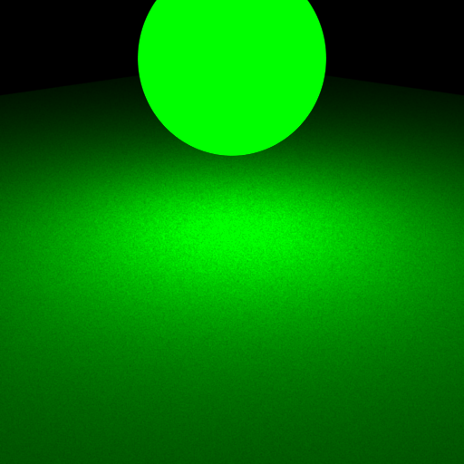
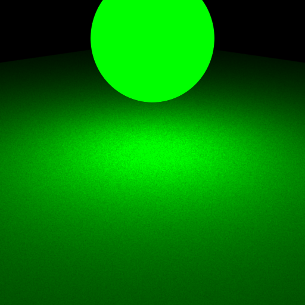
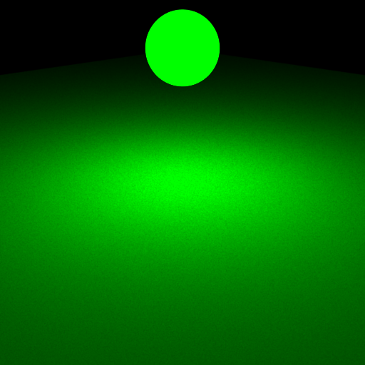
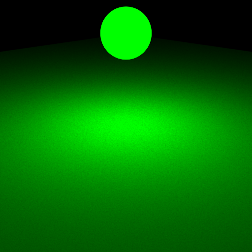
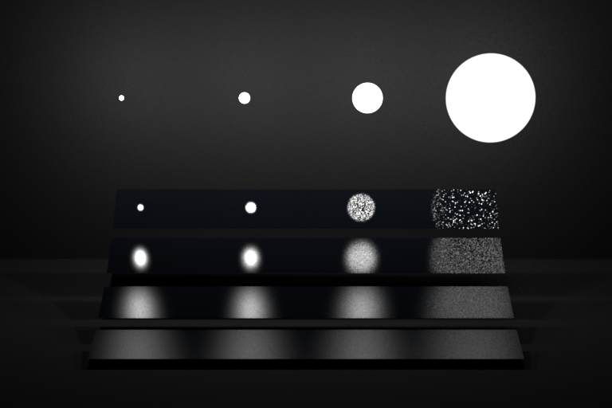
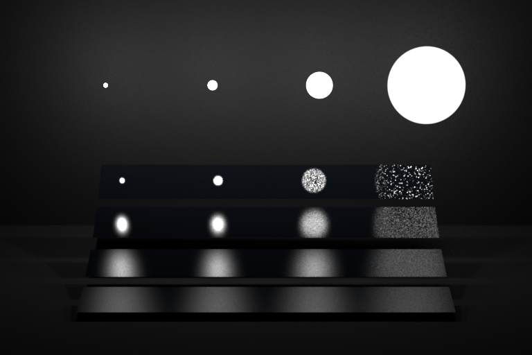

Part 1: Light Sampling
The main code was easy to implement. But some small mistakes took very long to fix. So overall I spent around 1 day for this.
Integrator Implementation
I first check if we hit an emitter. If we do, we compute the light and add this to the final color. Afterwards, we loop over all lights in the scene and sample them.
I check if the shadow ray intersects again, if it does, we are in the penumbra and don't add this sampled radiance.
Shape Area Light
This implementation is done straightforward. The hardest part was the check if we are on the backside, because we need to use -wi and not wi (because wi is seen from the intersection point, not from the light). This took some time to find out.
We compute the shadow ray with epsilon distance to the start and end, because we do not wan't self intersections.
Validation
All tests passed.
Point EMS
We see no difference in the images.

Sphere EMS
We see difference in the images, but uniform across the whole floor, this is okey.
 

Sphere Mesh EMS
We see difference in the images, but uniform across the whole floor, this is okey.


Sphere2 Mesh EMS
We see difference in the images, but uniform across the whole floor, this is okey.
 

Oddysey EMS
We see difference in the images, but uniform, this is okey.

Veach EMS
We see quite some variance below the area lights. The variance of the differences seem uniform, so I guess this is okey.
My code seems to create a better approximation of the light on the tiles.
 

Part 2: BRDF Sampling
The main code was easy to implement, however I had problems with the BSDF query record (and using the correct arguments). This resulted in much debugging. Overall I had around 1 day for this.
Integrator Implementation
I first check if we hit an emitter. If we do, we compute the light and add this to the final color. Afterwards, I sample the BSDF (using a cosine weighted hemisphere).
I finally check if the sampled ray from the BSDF hits an emitter.
Microfacet BRDF
The Microfacet BRDF was very easy to implement (straightforward). As all helper functions were given, it was just a task of correctly adding / multiplying them.
Validation
All tests passed.
Sphere MATS
We have only uniform variance on the floor.


Sphere2 MATS
We have only uniform variance on the floor.

Oddysey MATS
We have only uniform variance on the floor.

Veach MATS
We have only uniform variance everywhere, this seems fine.

Part 3: Multiple Importance Sampling
This was a little bit more tricky to implement as we had to weight the two parts correctly.
Integrator Implementation
We do the same as for EMS and MATS respectively, but for EMS we sample only one light and normalize the PDFs accordingly.
Validation
All tests passed.
Oddysey MIS


Veach MIS

Image Validation
Comparison Oddysey
Comparison Veach